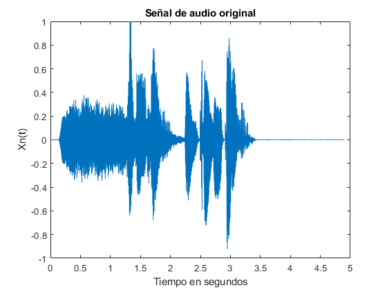
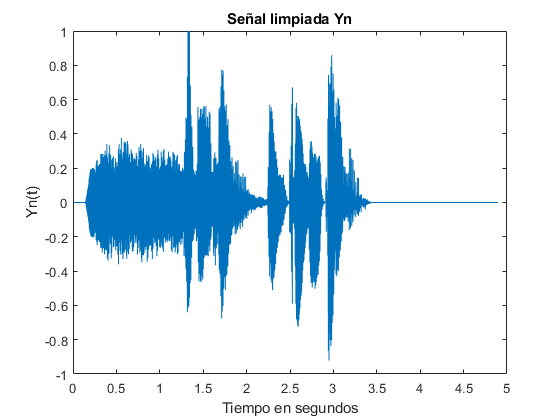
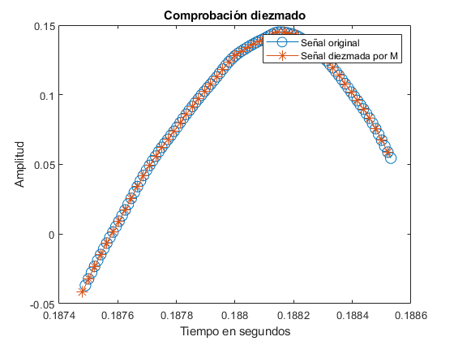

Práctica 3
Teresa González y Miguel Oleo Ñ ó
Contents
Diezmado por un factor entero
Apartado a)
[Xn, fs] = audioread('PDS_P3_LE1_G3.wav');
sound(Xn,fs);
Apartado b)
dt = 1/fs; t= 0:dt:((length(Xn)-1)/fs); figure(); plot(t,Xn) title('Señal de audio original') xlabel('Tiempo en segundos') ylabel('Xn(t)')
Apartado c)
Yn = Xn; index1 = find(t <= 0.1423); index2 = find(t >= 3.43); Yn(index1)=0; Yn(index2)=0; figure; plot(t,Yn) title('Señal limpiada Yn') xlabel('Tiempo en segundos') ylabel('Yn(t)')
Apartado d y e)
M = 2; Gn = Diezmador(M,Yn); fs_g = fs/M; dt2 = 1/fs_g; t_g= 0:dt2:((length(Gn)-1)/fs_g); figure() plot(t_g,Gn) title('Yn diezmada con M=2') ylabel('Gn(t)') xlabel('Tiempo en segundos')
Apartao f)
vect_1 = 18000:18100; vect_2 = (18000/M):(18100/M); figure() plot(t(vect_1),Yn(vect_1),'-o','MarkerSize',10) hold on plot(t_g(vect_2),Gn(vect_2),'-*','MarkerSize',10) title('Comprobación diezmado'); xlabel('Tiempo en segundos') ylabel('Amplitud') legend('Señal original','Señal diezmada por M')